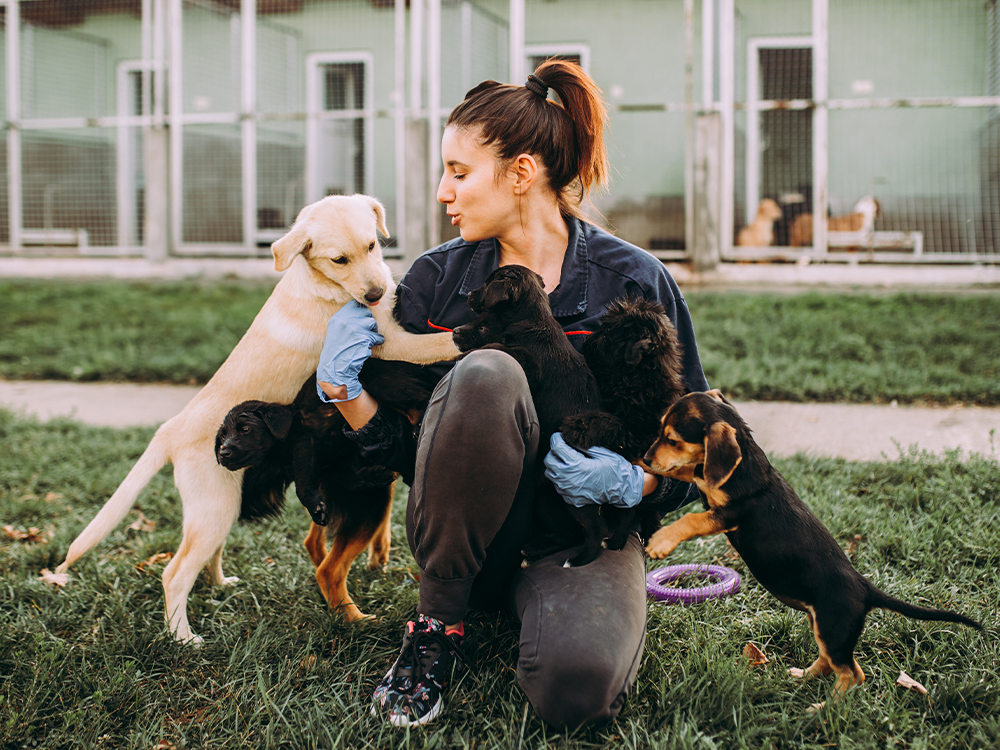

Miss Aileen Lee Sor Geok or more commonly known as Aunty Aileen, is the founder of Pet Adoption. Aunty Aileen was previously a pub owner before she discovered her passion for animals. It was only after she started working for a pet shop when she closed down her pub that she found her love for animals. After working in the pet shop for x years, she wasn’t really happy with the management. She could tell the boss didn't have the animals' best interests at heart. He denied Aunty Aileen's requests to walk the dogs that were kept in cages too small for them to even stretch their legs. Being the rebel she is, she took the dogs out for a walk whenever the boss wasn’t around. One day as she was walking the dogs, she saw that there were new vacant shop lots that were up just outside the mall where she worked at and that was when she got the idea of starting her own pet shop.
Hence, on June 7th 2018, My Pets Centre was open for business and has been operating ever since. It was renamed to Pet Adoption 2 years later. Now, you would wonder, Isn’t Pet Adoption a shelter instead of a business? Well, Pet Adoption is exactly what its name suggests, we are a haven for animals that we had rescued off the streets. We serve as a temporary shelter for these animals until they get adopted and we provide services such as grooming, boarding, and pet food sales to pay for the rent of our centre. All our rescue work is carried out independently and funded by Aunty Aileen’s personal savings and donations from the public.
However, it didn’t use to be like this when the doors were first opened at My Pets Haven. Being in the pet sales industry, Aunty Aileen only knew how to sell animals at that point in time as awareness around animal adoption and welfare wasn’t really advocated for. It was only when ‘Wong Choy’ walked in the centre that things started to change. Wong Choy (‘Lucky Wong’ in English) was a stray dog which wandered into our centre one day. It was such a peculiar incident, but Aunty Aileen decided to take him in. After spending sometime being in our centre, Wong Choy got adopted! It was then she realised she could actually do more for the stray animals living on the streets. She could rehabilitate and rehome them. Each day since then, she's only grown more and more passionate towards helping animals in need and started rescuing and rehoming more and more animals off the streets. Then, Aunty Aileen found her true calling in life. Aunty Aileen emphasizes the need for collective efforts to address the challenges faced by stray animals, and she envisions a future where every pet receives the love and care they deserve. The support from the community and individuals highly encouraged . So together, we can make a lasting difference in the lives of our furry friends and contribute to building a more compassionate society.
rescuing needy animals from neglect and abuse is our primary mission to help the animals and show our care
we strongly advocate adopting,not shopping.Our end-goal is to find our animals their forever home
getting our resvued animals the medical treatment they need and making sure they are healthy before they go their forever homes

Our vision is to expand our shelter’s capacity to rescue more animals and rehome them. We aim to do more for the stray animals to give them another chance at a better life. We have saved, vaccinated, sterilised and rehomed over a thousand stray animals since we began our rescuing efforts. Ultimately, we are striving to curb negligence towards stray animals as well as control the stray population in our community. We still lack the resources and capacity to accommodate for our increasing number of rescues as we are an independent organisation. Nevertheless, we will continue to persevere in our efforts to help more animals in need and to carry out our work with compassion and integrity.
| Category | Percentage |
|---|---|
| Adopted pets | 34% |
| Abandoned pets | 66% |